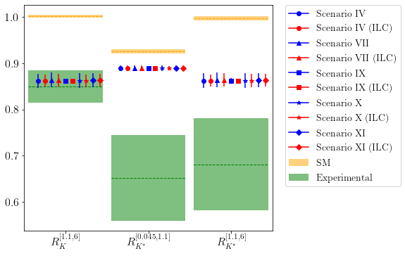
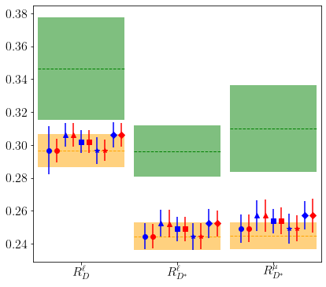

03: RK and RD¶
We first need to calculate the 1-sigma allowed region after the ILC prospects have been added. The best fit points shouldn’t change. We only calculate in the best scenarios.
import SMEFT19
from SMEFT19.scenarios import scIV, scVII, scIX, scX, scXI
scenarios = [scIV, scVII, scIX, scX, scXI]
bf_points = [(-0.15111781, 0.15206517), (-0.14972665, 0.14965083, -0.26949984), (-0.15251954,),
(-0.15143862,), (-0.14988535, -0.26939863)]
Fits¶
for i, sc in enumerate(scenarios):
def fit(x):
return -SMEFT19.likelihood_global(x, sc)
scname = sc.__name__
scid = scname[2:]
SMEFT19.SMEFTglob.smelli.flavio.measurements.read_file(f'../data/InputsILC/Input_{scname}.yaml')
SMEFT19.SMEFTglob.restart_smelli(custom_measurements={'likelihood_ewpt.yaml':('ILC250',)})
bf, v, d, L = SMEFT19.ellipse.minimum(fit, bf_points[i])
SMEFT19.ellipse.save(bf, v, d, L, f'../data/ellipses/{scname}_ILC.yaml', f'Scenario {scid} ILC, PhD version',
f'Scenario {scid}')
Minimizing...
Pull: 4.973615677065937 sigma
Minimizing...
Pull: 4.917754968099209 sigma
Minimizing...
Pull: 5.514473561088102 sigma
Minimizing...
Pull: 5.352717500259077 sigma
Minimizing...
Pull: 5.224668007411581 sigma
Observables¶
SMEFT19.obsuncert.calculate(scIV, [-0.5, 0], [0, 0.5], '../data/observables/obsIV_ILC.yaml',
'../data/ellipses/scIV_ILC.yaml', name='Scenario IV (ILC)', mode='hess', cores=4)
3 of the measurements of 'Rtaul(B->Dlnu)' are multivariate. This can lead to inconsistent results as the other observables are profiled over. To be consistent, you should perform a multivariate combination that is not yet supported by `combine_measurements`.
3 of the measurements of 'Rtaul(B->D*lnu)' are multivariate. This can lead to inconsistent results as the other observables are profiled over. To be consistent, you should perform a multivariate combination that is not yet supported by `combine_measurements`.
SMEFT19.obsuncert.calculate(scVII, [-0.5, 0, -1], [0, 0.5, 0.5], '../data/observables/obsVII_ILC.yaml',
'../data/ellipses/scVII_ILC.yaml', name='Scenario VII (ILC)', mode='hess', cores=4)
3 of the measurements of 'Rtaul(B->Dlnu)' are multivariate. This can lead to inconsistent results as the other observables are profiled over. To be consistent, you should perform a multivariate combination that is not yet supported by `combine_measurements`.
3 of the measurements of 'Rtaul(B->D*lnu)' are multivariate. This can lead to inconsistent results as the other observables are profiled over. To be consistent, you should perform a multivariate combination that is not yet supported by `combine_measurements`.
SMEFT19.obsuncert.calculate(scIX, [-0.5], [0], '../data/observables/obsIX_ILC.yaml',
'../data/ellipses/scIX_ILC.yaml', name='Scenario IX (ILC)', mode='hess', cores=4)
3 of the measurements of 'Rtaul(B->Dlnu)' are multivariate. This can lead to inconsistent results as the other observables are profiled over. To be consistent, you should perform a multivariate combination that is not yet supported by `combine_measurements`.
3 of the measurements of 'Rtaul(B->D*lnu)' are multivariate. This can lead to inconsistent results as the other observables are profiled over. To be consistent, you should perform a multivariate combination that is not yet supported by `combine_measurements`.
SMEFT19.obsuncert.calculate(scX, [-0.5], [0], '../data/observables/obsX_ILC.yaml',
'../data/ellipses/scX_ILC.yaml', name='Scenario X (ILC)', mode='hess', cores=4)
3 of the measurements of 'Rtaul(B->Dlnu)' are multivariate. This can lead to inconsistent results as the other observables are profiled over. To be consistent, you should perform a multivariate combination that is not yet supported by `combine_measurements`.
3 of the measurements of 'Rtaul(B->D*lnu)' are multivariate. This can lead to inconsistent results as the other observables are profiled over. To be consistent, you should perform a multivariate combination that is not yet supported by `combine_measurements`.
SMEFT19.obsuncert.calculate(scXI, [-0.5, -1], [0, 0.5], '../data/observables/obsXI_ILC.yaml',
'../data/ellipses/scXI_ILC.yaml', name='Scenario XI (ILC)', mode='hess', cores=4)
3 of the measurements of 'Rtaul(B->Dlnu)' are multivariate. This can lead to inconsistent results as the other observables are profiled over. To be consistent, you should perform a multivariate combination that is not yet supported by `combine_measurements`.
3 of the measurements of 'Rtaul(B->D*lnu)' are multivariate. This can lead to inconsistent results as the other observables are profiled over. To be consistent, you should perform a multivariate combination that is not yet supported by `combine_measurements`.
Plots¶
from SMEFT19.plots import error_plot
scs = ['IV', 'VII', 'IX', 'X', 'XI']
error_plot('../data/plots/RKplot_ILC', 'RK', [f'../data/observables/obs{s}.yaml' for s in scs],
[f'../data/observables/obs{s}_ILC.yaml' for s in scs], legend=1)

error_plot('../data/plots/RDplot_ILC', 'RD', [f'../data/observables/obs{s}.yaml' for s in scs],
[f'../data/observables/obs{s}_ILC.yaml' for s in scs], legend=0)
